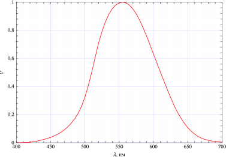
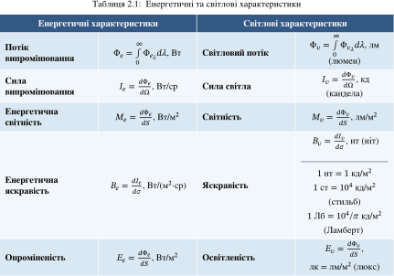
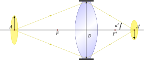
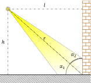
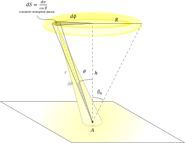

Оптика. Практичний курс
2 Фотометрія
§ 2.1 Основні поняття і закони
Енергетичні характеристики
Електромагнітна хвиля переносить енергію (яку будемо називати променистою енергією).
Основною характеристикою — є потік випромінювання (або потужність випромінювання). Потік випромінювання ( променистий потік) — це величина енергії, що переноситься електромагнітною хвилею за одиницю часу через ділянку:
\(\seteqnumber{0}{2.}{0}\)\begin{equation} \label {eq:Flux_e} \Phi _e = \frac {dW_\text {е}}{dt} \end{equation}
Потік випромінювання вимірюється у Ватах (Вт).
Енергія залежить від спектрального складу світла. Якщо розкласти хвилю на монохроматичні складові (кожна з певною довжиною хвилі), то вся енергія певним чином розподілиться між ними. Для цього вводять спектральна густину потоку випромінювання:
\(\seteqnumber{0}{2.}{1}\)\begin{equation} \label {eq:Flux_e_lambda} \Phi _{e_{\lambda }} = \frac {d\Phi _e}{d\lambda }. \end{equation}
Сила випромінювання — характеризує потужність випромінювання в деякому напрямку і дорівнює відношенню потоку \(d\Phi _e\), що поширюється від джерела всередині малого тілесного кута \(d\Omega \), до величини цього кута:
\(\seteqnumber{0}{2.}{2}\)\begin{equation} \label {eq:Radiant_intensity} I_e = \frac {d\Phi _e}{d\Omega }. \end{equation}
Одиницею вимірювання у Міжнародній системі одиниць (СІ) є Вт/ср (Ватт на стерадіан).
Енергетична світність — характеризує потужність випромінювання з одиниці площі поверхні і дорівнює відношенню потоку \(d\Phi _e\), що випромінюється малою ділянкою поверхні джерела, до його площі \(dS_S\):
\(\seteqnumber{0}{2.}{3}\)\begin{equation} \label {eq:Radiant_exitance} M_e = \frac {d\Phi _e}{dS_S}. \end{equation}
Одиницею вимірювання у Міжнародній системі одиниць (СІ) є Вт/м\(^2\).
Енергетична яскравість — характеризує потік випромінювання в одиниці тілесного кута з одиниці видимої площі джерела і дорівнює відношенню потоку \(d\Phi _e\) з малої ділянки поверхні джерела до тілесного кута \(d\Omega \) і до площі проекції цієї ділянки на площину, перпендикулярну до напряму поширення (видимої площі \(d\sigma \)):
\(\seteqnumber{0}{2.}{4}\)\begin{equation} \label {eq:Radiance} B_e = \frac {d^2\Phi _e}{dS\cos \alpha \cdot d\Omega } = \frac {dI_e}{dS\cos \alpha } = \frac {dI_e}{d\sigma }. \end{equation}
Одиницею вимірювання у Міжнародній системі одиниць (СІ) є Вт/(м\(^2\cdot \)ср).
Опроміненість — характеризує поверхневу густину потужності випромінювання, що падає на поверхню і дорівнює відношенню потоку \(d\Phi _{e}\), що падає на малу ділянку поверхні, до площі цієї ділянки \(dS_a\):
\(\seteqnumber{0}{2.}{5}\)\begin{equation} \label {eq:Irradiance} E_e = \frac {d\Phi _e}{dS_a}. \end{equation}
Одиницею вимірювання у Міжнародній системі одиниць (СІ) є Вт/(м\(^2\)).
Світлові характеристики
Енергетичні величини вичерпно характеризують енергетичні процеси, що пов’язані з поширенням, поглинанням і перевипромінюванням електромагнітних хвиль, однак вони не дозволяють кількісно оцінити візуальне сприйняття випромінювання оком людини.
Сприйняття оком випромінювання видимого діапазону визначається не лише потужністю випромінювання, але й залежить з його спектрального складу (оскільки око — селективний приймач випромінювання). Тому, для характеристики енергетичних властивостей, у видимому діапазоні довжин електромагнітних хвиль з урахуванням сприйняття зоровою системою ока людини вводять так звані фотометричні (або світлові) характеристики та їх одиниці вимірювання (перелічені в в табл. 2.1).
Зв’язок світлових та енергетичних величин встановлюється через зорове сприйняття, яке добре вивчене експериментально. Для цього вводиться функція \(V(\lambda ) \) — відносна спектральна ефективність монохроматичного випромінювання (або функція видності ока), яка пов’язує енергетичні та світлові характеристики:
\(\seteqnumber{0}{2.}{6}\)\begin{equation} \label {eq:Phi_nu_with_Phi_v} \Phi _{v_{\lambda }} = K_m V(\lambda ) \Phi _{e_{\lambda }}. \end{equation}
Функція видності \(V(\lambda )\) показує, як очі сприймають випромінювання різного спектрального складу, причому вплив потоку випромінювання з довжиною хвилі \(\lambda = 555\) нм умовно приймається за одиницю, тобто \(V(\lambda )\) максимальна в області жовто-зеленого кольору (\(550 \div 570\) нм) і спадає до нуля для червоних та фіолетових променів (рис. 2.1). Коефіцієнт \(K_{m}\) — називається світловим еквівалентом — величина якого визначається використовуваною системою одиниць. У системі СІ, де за одиницю світлового потоку прийнято \(1\) люмен (лм), цей коефіцієнт дорівнює \(683.002\) лм/Вт.

(Дані взяті з http://www.cvrl.org/lumindex.htm)
Інші світлові величини визначаються аналогічно до енергетичних, однак мають відмінні назви (див. табл. 2.1) і завдяки (2.7) відмінні одиниці вимірювання. Наприклад, для сили світла в Міжнародній системі одиниць (СІ) вводиться одиниця, яка називається кандела, яка прийнята за основну. Одна кандела — це сила світла в заданому напрямку від джерела, що випромінює монохроматичне випромінювання частотою \(540\cdot 10^{12}\) Гц і має силу випромінення в цьому напрямку \((1/683)\) Вт/ср.

Закон обернених квадратів
Розглянемо точкове джерело випромінювання.
Точкове джерело —- це джерело, розмірами якого можна знехтувати в порівнянні з відстанню до нього, і яке випромінює потік, рівномірний у всіх напрямках.
Освітленість, що створюється точковим джерелом обернено пропорційна квадрату відстані \(r\) від джерела до поверхні і прямо пропорційно косинусу кута \(\alpha \), між напрямком на джерело світлового потоку і нормаллю до поверхні, що освітлюється:
\(\seteqnumber{0}{2.}{7}\)\begin{equation} \label {eq:Inverse_square_low} E = \frac {I}{r^2}\cos \alpha . \end{equation}
Це твердження носить назву закону обернених квадратів.
Закон Ламберта
Джерелом випромінювання може бути не лише точкове джерело, а й деяка поверхня.
Простою моделлю протяжного джерела випромінювання є так званий ламбертівський випромінювач у якого яскравість не залежить від кута спостереження. Для таких джерел сила випромінювання в даному напрямку пропорційна косинусу кута \(\alpha \) між цим напрямком і нормаллю до випромінюючої площадки (рис. 2.3):
\(\seteqnumber{0}{2.}{8}\)\begin{equation} \label {eq:Lambert_Law} I = I_0\cos \alpha . \end{equation}
Цей вираз називається законом Ламберта.
На практиці будь-яка поверхня, що добре розсіює, може вважатися ламбертівським випромінювачем (білий матовий папір, шорсткі поверхні металів тощо).
Освітленість від протяжних ламбертівських випромінювачів
-
Якщо поверхня освітлюється нескінченно великою рівнояскравою плоскою поверхнею або увігнутою напівсферою довільного радіуса, то її освітленість дорівнює
\(\seteqnumber{0}{2.}{9}\)\begin{equation} \label {eq:E_inf_plane} E = \pi B, \end{equation}
де \(B\) — яскравість джерела.
-
Якщо поверхня освітлюється рівнояскравим диском радіуса \(R\) (рис. 2.4), який знаходиться на відстані \(r\) від неї, то її освітленість дорівнює:
\(\seteqnumber{0}{2.}{10}\)\begin{equation} \label {eq:E_disk} E = \pi B \sin ^2\alpha , \end{equation}
де \(2\alpha \) — кут між крайніми променями.
-
Освітленість для осьової точки \(A'\) зображення, яке створює об’єктив (за умови відсутності оптичних втрат), визначається як:
\(\seteqnumber{0}{2.}{11}\)\begin{equation} \label {eq:E_objective} E_{A'} = \pi B \sin ^2u', \end{equation}
\(2u'\) — задній апертурний кут об’єктива, \(B\) — яскравість об’єкта.
Цю формулу можна отримати з (2.11) з тих міркувань, що кут сходження крайніх променів з вершиною на поверхні зображення замість \(2\alpha \) стає рівним \(2u'\).

Якщо предмет знаходиться на нескінченності, то для об’єктів з малою світлосилою
\(\seteqnumber{0}{2.}{12}\)\begin{equation*} \sin u' \approx \frac {D}{2f'}, \end{equation*}
де \(D\) — діаметр вхідної зіниці, \(f'\) — фокусна відстань об’єктива. Тоді з (2.12) випливає, що освітленість зображення (за умови відсутності втрат на поверхнях лінзи) дорівнює:
\(\seteqnumber{0}{2.}{12}\)\begin{equation} E_{A'} = \frac {\pi }{4B} \left ( \frac {D}{f'}\right )^2. \end{equation}
§ 2.2 Приклади розв’язування задач
Приклад 14. На висоті \(h = 3\) м над землею й на відстані \(l = 4\) м від стіни висить лампа силою світла \(I = 100\) кд. Визначити освітленість \(E_1\) стіни та \(E_2\) підлоги на лінії їхнього перетину.
Розв’язок.
Знайдемо кути між нормаллю до поверхні в якій шукаємо освітленість і напрямком на джерело.

В кут між стіною і підлогою на стіну випромінювання падає під кутом \(\alpha _1\) (див. рис.). Тому, освітленість стіни згідно закону обернених квадратів (2.8):
\(\seteqnumber{0}{2.}{13}\)\begin{equation*} E_1 = \frac {I}{r^2}\cos \alpha _1 = \frac {I\cdot l}{(h^2 + l^2)^{3/2}} = \frac {100\cdot 4}{(4^2 + 3^3)^{3/2}} = 3,2\ \text {лк}. \end{equation*}
В кут між стіною і підлогою на підлогу випромінювання падає під кутом \(\alpha _2\) (див. рис.).
\(\seteqnumber{0}{2.}{13}\)\begin{equation*} E_2 = \frac {I}{r^2}\cos \alpha _2 = \frac {I\cdot h}{(h^2 + l^2)^{3/2}} = \frac {100\cdot 3}{(4^2 + 3^3)^{3/2}} = 2,4\ \text {лк}. \end{equation*}
Приклад 15. Круглий диск радіусом \(R\) світиться за законом Ламберта з яскравістю \(B\). Визначити освітленість у точці, що віддалена на відстань \(h\) від центру диска у напрямі, нормальному до його поверхні.
Розв’язок.

Весь диск розріжемо на нескінченно малі світні точки, для яких освітленість в точці \(A\) визначається за законом обернених квадратів (2.8):
\(\seteqnumber{0}{2.}{13}\)\begin{equation} \label {eq:dE} dE = \frac {dI}{r^2}\cos \theta . \end{equation}
З означення яскравості
\(\seteqnumber{0}{2.}{14}\)\begin{equation} \label {eq:dI} dI = BdS\cos \theta = Bd\sigma , \end{equation}
де \(dS\) — елемента площі поверхні диска, \(d\sigma \) — видима з точки \(A\) площа диска, яку можна знайти з означення тілесного кута (Б.1)):
\(\seteqnumber{0}{2.}{15}\)\begin{equation} \label {eq:dsigma} d\sigma = r^2 d\Omega = r^2 \sin \theta d\theta d\phi . \end{equation}
Таким чином, враховуючи (2.15) та (2.16), вираз (2.14) приймає вигляд:
\(\seteqnumber{0}{2.}{16}\)\begin{equation*} dE = \frac {Bd\sigma }{r^2}\cos \theta = B r^2 \cos \theta \sin \theta d\theta d\phi . \end{equation*}
Проінтегруємо цей вираз по площі всього диска, враховуючи що диск є ламбертівським джерелом (\(B = \mathrm {const}\)):
\(\seteqnumber{0}{2.}{16}\)\begin{equation} \label {eq_ex:E} E = B \int \limits _0^{2\pi } d\phi \int \limits _0^{\theta _0} r^2 \cos \theta \sin \theta d\theta = \pi B \sin ^2\theta _0, \end{equation}
де \(2\theta _0\) — кут між крайніми променями від диска в точці \(A\).
З умов задачі \(\sin \theta _0 = \frac {R}{\sqrt {R^2 + h^2}}\), тому з (2.17) остаточно маємо:
\(\seteqnumber{0}{2.}{17}\)\begin{equation} E = \frac {B \pi R^2}{\sqrt {R^2 + h^2}}. \end{equation}
Рефлексія після розв’язку:
-
1. Величина \(B \cdot \pi R^2 = BS_\text {диска} = I\) — є силою світла диска, який умовно сконцентровано в точку в його центрі.
-
2. Якщо диск має нескінченний радіус (\(\theta _0 \to \pi /2\)), то формула (2.17) дає вираз
\(\seteqnumber{0}{2.}{18}\)\begin{equation*} E = \pi B, \end{equation*}
що співпадає з освітленістю від нескінченної рівнояскравої площини (2.10).
Приклад 16. Люмінесцентна циліндрична лампа діаметром \(d = 2,5\) см і довжиною \(l = 40\) см створює на відстані \(r = 5\) м у напрямку, перпендикулярному осі лампи, освітленість \(E_v = 2\) лк. Приймаючи лампу за косинусний випромінювач, визначити: 1) силу світла \(I\) у даному напрямку; 2) яскравість \(L\); 3) світність \(M\) лампи.
Розв’язок.
Більший із двох розмірів лампи — довжина — в \(12\) разів менше відстані, на якій виміряна освітленість. Отже, для обчислення сили світла в даному напрямку можна прийняти лампу за точкове джерело та застосувати формулу
\(\seteqnumber{0}{2.}{18}\)\begin{equation*} E = \frac {I}{r^2}, \end{equation*}
звідки \(I = 25\) кд. Для обчислення яскравості застосуємо формулу
\(\seteqnumber{0}{2.}{18}\)\begin{equation*} B = \frac {I}{\sigma } \end{equation*}
де \(\sigma \) — площа проекції протяжного джерела світла на площину, перпендикулярну напрямку спостереження.
У випадку циліндричної люмінесцентної лампи проекція має форму прямокутника довжиною \(l\) і шириною \(d\). Отже, знайдемо \(B = 2,5\cdot 10^3\) кд/м\(^2\).
Так як люмінесцентну лампу можна вважати косинусним випромінювачем, то її світність \(M = \pi B = 7,9\cdot 10^3\) лк.
Приклад 17. Прожектор ближньої дії дає пучок світла у вигляді конуса з кутом розкриву \(2\theta = 40^\circ \). Світловий потік \(\Phi \) прожектора дорівнює \(8\cdot 10^4\) лм. Припускаючи, що світловий потік всередині конуса розподілений рівномірно, визначити силу світла прожектора.
Розв’язок.
Повний тілесний кут прожектора можна визначити в сферичній системі координат з (Б.2):
\(\seteqnumber{0}{2.}{18}\)\begin{equation*} \Omega = \int \limits _0^{\theta _0} \int \limits _0^{2\pi } \sin \theta d\theta d\phi = 2\pi (1- \cos \theta _0). \end{equation*}
З означення сили світла \(I = \frac {\Phi }{\Omega }\) маємо
\(\seteqnumber{0}{2.}{18}\)\begin{equation*} I = \frac {\Phi }{2\pi (1- \cos \theta _0)} = \frac {8\cdot 10^{-4}}{2\pi (1- 0,94)} = 2,11\cdot 10^5\ \text {кд}. \end{equation*}
§ 2.3 Задачі для самостійного розв’язку
Світловий потік і сила світла
-
2.6. Лампочка, яка споживає потужність \(P = 75\) Вт, створює на відстані \(r = З\) м при нормальному падінні променів освітленість \(E = 8\) лк. Визначити питому потужність \(p\) лампочки (у ватах на канделу) і світлову віддачу \(\eta \) лампочки (у лм/Вт). [відповідь]
-
2.7. Тепловий фотоприймач (див. рис.) — це камера з площею внутрішньої поверхні \(S = 2\) см\(^2\), яка має невеликий отвір площею \(S_1 =1\) мм\(^2\).
[1]
Внутрішня поверхня поглинає незначну кількість світла (коефіцієнт поглинання \(k_\text {п} = 0,01\)), а іншу частину розсіює. В цих умовах всередені фотоприймача утворюється рівномірно розподілене за всіма напрямками випромінювання. Яка частина світлового потоку \(\nfrac {\Phi }{\Phi _0}\) (де \(\Phi _0\) — потік, який падає на вхідний отвір камери) виходить через отвір назад?
-
2.8. Яку силу струму \(I\) покаже гальванометр, приєднаний до селенового фотоелемента, якщо на відстані \(r = 75\) см від нього помісити лампочку, повний світловий потік якої дорівнює \(1,2\cdot 10^3\) лм? Площа робочої поверхні фотоелемента рівна \(10\) см\(^2\), чутливість \(S_i = 3\cdot 10{-4}\) А/лм. [відповідь]
-
2.9. Плоско-опуклу лінзу розрізали навпіл і склали плоскими боками дві половинки. Як зміниться яскравість зображення віддаленого предмета? [відповідь]
Освітленість
-
2.10. При друкуванні фотознімка негатив освітлювався протягом \(t_1 = 3\) с лампочкою силою світла \(I_1 = 15\) кд з відстані \(r_1 = 50\) см. Визначити час \(t_2\), протягом якого потрібно освітлювати негатив лампочкою з силою світла \(I_2 = 60\) кд з відстані \(r_2 = 2\) м, щоб одержати відбиток з таким ж ступенем почорніння, як і в першому випадку? [відповідь]
-
2.11. На висоті \(h = 3\) м над землею й на відстані \(r = 4\) м від стіни висить лампа силою світла \(I = 100\) кд. Визначити освітленість \(E_1\) стіни й \(E_2\) горизонтальної поверхні землі на лінії їхнього перетину. [відповідь]
-
2.12. На щоглі висотою \(h = 8\) м висить лампа силою світла \(I = 10^3\) кд. Приймаючи лампу за точкове джерело світла, визначити, на якій відстані \(l\) від основи щогли освітленість \(E\) поверхні землі дорівнює \(1\) лк. [відповідь]
-
2.13. На якій висоті \(h\) над центром круглого стола радіусом \(r = 1\) м потрібно повісити лампочку, щоб освітленість на краю стола була максимальною? [відповідь]
Яскравість і світність
-
2.14. Світильник з матового скла має форму кулі діаметром \(d = 20\) см. Сила світла \(I\) кулі дорівнює \(80\) кд. Визначити повний світловий потік \(\Phi \), світність \(M\) и яскравість \(B\) світильника. [відповідь]
-
2.15. Якою виявиться освітленість \(E\) ділянки, якщо джерелом світла є нескінченна площина, паралельна цій ділянці? Поверхнева яскравість джерела світла всюди однакова і не залежить від напрямку. [відповідь]
-
2.16. Знайти освітленість на горизонтальній ділянці, яка освітлюється небесною напівсферою, за умови рівномірної яскравості неба. [відповідь]
-
2.17. Сонце, перебуваючи поблизу зеніту, створює на горизонтальній поверхні освітленість \(E = 10^5\) лк. Діаметр Сонця видний під кутом \(\alpha = 32'\). Визначити видиму яскравість \(B\) Сонця. [відповідь]
-
2.18. Яскравість \(B\) куба, що світиться однакова у всіх напрямках і дорівнює \(5\cdot 10^3\) кд/м\(^2\). Ребро а куба рівне \(20\) см. В якому напрямку сила світла \(I\) куба максимальна? Визначити максимальну силу світла \(I_{\max }\) куба. [відповідь]
-
2.19. Яскравість лампи з плафоном, який має форму конуса висотою \(15\) см з діаметром \(20\) см, однакова в усіх напрямках і дорівнює \(2 \cdot 10^3\) кд/м\(^2\). Основа конуса не світиться. Визначити силу світла конуса в напрямках: 1) вздовж осі; 2) перпендикулярно до осі. [відповідь]
-
2.20. На висоті \(h = 1\) м над горизонтальною площиною паралельно їй розташований невеликий диск, що світиться. Сила світла \(I_0\) диска в напрямку його осі дорівнює \(100\) кд. Приймаючи диск за точкове джерело з косинусним розподілом сили світла, знайти освітленість \(E\) горизонтальної площини в точці \(A\), віддаленої на відстань \(r = 3\) м від точки, розташованої під центром диска. [відповідь]
-
2.21. На якій висоті \(h\) над горизонтальною площиною (див. попереднє завдання 2.20) потрібно помістити диск, що світиться, щоб освітленість у точці \(A\) була максимальною? [відповідь]
-
2.22. Визначити освітленість \(E\), світність \(M\) і яскравість \(B\) кіноекрана, який рівномірно розсіює світло у всіх напрямках, якщо світловий потік \(\Phi \), що падає на екран з об’єктива кіноапарата (без кінострічки), дорівнює \(1,75\cdot 10^3\) лм. Розмір екрану \(5 \times 3,6\) м, коефіцієнт відбиття \(\rho = 0,75\). [відповідь]
-
2.23. Освітленість \(E\) поверхні, покритої шаром сажі, дорівнює \(150\) лк, яскравість \(B\) однакова у всіх напрямках і дорівнює \(1\) кд/м\(^2\). Визначити коефіцієнт відбиття \(\rho \) сажі. [відповідь]